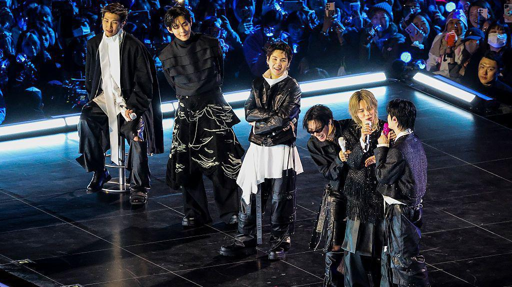

Police Defend "Excessive" Security At BTS Gwanghwamun Concert Amid Public Criticism

Seoul's top police official has responded to mounting criticism over what many called an "excessive" security deployment at BTS's historic comeback concert. Seoul Metropolitan Police Agency Commissioner Park Jeong Bo defended the massive operation during a press briefing on March 23, citing terrorism concerns related to ongoing tensions in the Middle East as justification for the unprecedented police presence.
The statement comes just two days after BTS held their free comeback concert, "BTS Comeback Live: Arirang," at Gwanghwamun Square in central Seoul. While the event was celebrated as a triumphant return for the global superstars, criticism quickly emerged regarding what observers described as a disproportionate allocation of public resources.
Commissioner's Defense: "We Must Respond Excessively"
At the morning press briefing, Commissioner Park was direct in his response to the criticism. "When it comes to public safety, we must respond excessively," he stated firmly. "Considering the threat of terrorism due to the Middle East situation, we prioritized safety above all else for this event."
The comment references ongoing geopolitical tensions that have raised security concerns for large public gatherings worldwide. South Korea, as a U.S. ally with significant presence in international affairs, has been particularly vigilant about potential threats to high-profile events.
Addressing questions about the dramatic overestimation of expected attendees—police had originally projected up to 260,000 people would gather—Commissioner Park explained the rationale behind the numbers. "We prepared for the worst-case scenario where up to 260,000 people could fill the area up to Sungnyemun," he said, referencing the historic Namdaemun Gate that marks one end of the potential crowd zone.
By The Numbers: What Actually Happened
The reality of Saturday's event painted a different picture than the projected worst-case scenario. Using real-time data, the Seoul Metropolitan Government counted approximately 48,000 people in Gwanghwamun Square itself. When including those who watched the performance from nearby Seoul Plaza and surrounding areas, the total rose to around 104,000 attendees.
While 104,000 is still a massive gathering by any standard—and the concert has been widely praised as a success—it represents less than half of the projected 260,000 that drove security planning. This discrepancy has fueled criticism about resource allocation and the accuracy of event planning.
Police reported that a total of 74 emergency calls (112) were received in relation to the concert. The majority of these reports concerned traffic inconvenience and noise complaints—routine issues for any large public event. Three public threat reports were also received, but all cases were closed after confirming the individuals involved were either intoxicated or experiencing mental health issues.
Cyber Operations and Fraud Prevention
Beyond physical security, police also conducted significant online operations related to the concert. Officers deleted or blocked 194 online posts suspected of being ticket-related scams involving proxy ticketing services or illegal ticket resales.
Three cases of ticket transfer fraud were handed over to regional police agencies for investigation. Additionally, two cases involving suspected bulk ticket purchases using macro programs are currently under investigation by the Seoul Metropolitan Police cyber unit on charges of obstruction of business.
These cyber enforcement efforts highlight the ongoing challenges that surround high-demand K-pop events, where the gap between ticket supply and demand creates opportunities for fraudsters to exploit eager fans.
The Criticism: Was It Too Much?
Despite police characterizing the event as a success with no casualties, criticism about the excessiveness of the security deployment continues to swirl online and in Korean media. Critics have raised several concerns about the operation.
First and foremost is the question of proportionality. With actual attendance less than half of projections, some argue that the security deployment represented a waste of public resources. Thousands of police officers, emergency responders, and city officials were stationed across Gwanghwamun Square and nearby areas throughout the day.
The criticism has also taken on political dimensions, with some questioning whether a K-pop concert—even one for the nation's most famous group—warranted such an extraordinary allocation of public safety resources. These debates touch on broader discussions about the relationship between the K-pop industry and government support.
Others have pushed back against the criticism, arguing that the absence of any serious incidents validates the security approach. "Better to be over-prepared than under-prepared for an event of this magnitude," one commenter wrote on a popular Korean forum. "Remember what happened at Itaewon."
The reference to the 2022 Itaewon Halloween crowd crush, which killed 159 people, looms large over all discussions of crowd management in Korea. That tragedy fundamentally changed how authorities approach large gatherings, making any criticism of "excessive" precautions a sensitive topic.
HYBE's Response
HYBE, BTS's parent company, has also issued statements addressing various issues surrounding the concert. The company has defended the event planning while acknowledging that some aspects could have been handled differently.
The concert itself has been widely praised for its artistic content, with BTS delivering a powerful performance of tracks from their new album "ARIRANG" alongside classic hits. The livestream of the show ranked number one on Netflix in 77 countries, demonstrating the global reach of the comeback event even as local attendance fell below projections.
Market Reaction
The criticism has had tangible financial consequences. HYBE shares fell sharply on Monday, trading down over 16% from the previous session. While the stock decline reflects multiple factors—including the lower-than-expected turnout—the controversy over public resources has contributed to negative sentiment.
HYBE shares had risen to a recent peak of 401,500 won on February 23 on expectations surrounding BTS's comeback. They closed at 344,000 won on Friday before falling to the 288,000 won range as of Monday afternoon—a significant correction that has wiped billions of won from the company's market capitalization.
Looking Forward
As BTS prepares for their upcoming world tour, questions about security planning for major K-pop events will likely continue. The Gwanghwamun concert has become a case study in the challenges of balancing public safety with resource efficiency.
For Commissioner Park and the Seoul Metropolitan Police Agency, the bottom line appears clear: no one was hurt, and no serious incidents occurred. Whether that justifies the scale of the security operation remains a matter of debate.
"All in all, the Seoul Metropolitan Police Agency considers the event a successful one, with no casualties," police stated in their official summary. For tens of thousands of fans who experienced BTS's triumphant return in person—and millions more who watched worldwide—that may be what matters most.
BTS's "ARIRANG" album is now available on all major streaming platforms. The group's world tour kicks off later this year.